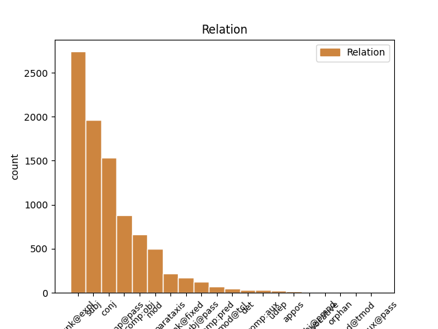
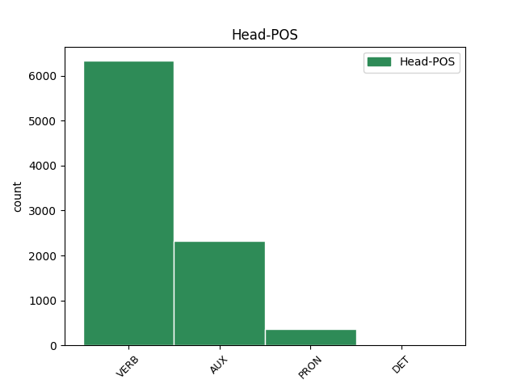
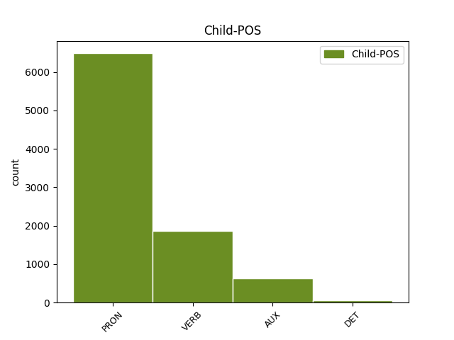

Distribution of features within this leaf



Agreement Rules sorted by frequency.
- When the dependent token is the unk@expl(unk@expl) of the head token, and the dependent token is PRON.
1 Coeficientul _ _ _ _ 0 _ _ _
2 de _ _ _ _ 0 _ _ _
3 variație _ _ _ _ 0 _ _ _
4 este _ _ _ _ 0 _ _ _
5 o _ _ _ _ 0 _ _ _
6 statistică _ _ _ _ 0 _ _ _
7 relativă _ _ _ _ 0 _ _ _
8 a _ _ _ _ 0 _ _ _
9 dispersiei _ _ _ _ 0 _ _ _
10 și _ _ _ _ 0 _ _ _
11 se sine PRON Px3--a--------w Case=Acc|Person=3|PronType=Prs|Reflex=Yes|Strength=Weak 12 unk@expl _ _
12 folosește folosi VERB Vmip3s Mood=Ind|Number=Sing|Person=3|Tense=Pres|VerbForm=Fin 0 _ _ _
13 la _ _ _ _ 0 _ _ _
14 compararea _ _ _ _ 0 _ _ _
15 dispersiei _ _ _ _ 0 _ _ _
16 diferitelor _ _ _ _ 0 _ _ _
17 variabile _ _ _ _ 0 _ _ _
18 ( _ _ _ _ 0 _ _ _
19 caracteristici _ _ _ _ 0 _ _ _
20 ) _ _ _ _ 0 _ _ _
21 . _ _ _ _ 0 _ _ _
1 Mediana _ _ _ _ 0 _ _ _
2 me _ _ _ _ 0 _ _ _
3 a _ _ _ _ 0 _ _ _
4 unui _ _ _ _ 0 _ _ _
5 set _ _ _ _ 0 _ _ _
6 de _ _ _ _ 0 _ _ _
7 date _ _ _ _ 0 _ _ _
8 statistice _ _ _ _ 0 _ _ _
9 distincte _ _ _ _ 0 _ _ _
10 ordonate _ _ _ _ 0 _ _ _
11 după _ _ _ _ 0 _ _ _
12 mărime _ _ _ _ 0 _ _ _
13 x1 _ _ _ _ 0 _ _ _
14 < _ _ _ _ 0 _ _ _
15 x2 _ _ _ _ 0 _ _ _
16 < _ _ _ _ 0 _ _ _
17 ... _ _ _ _ 0 _ _ _
18 < _ _ _ _ 0 _ _ _
19 xn _ _ _ _ 0 _ _ _
20 este _ _ _ _ 0 _ _ _
21 numărul _ _ _ _ 0 _ _ _
22 care care PRON Pw3--r Case=Acc,Nom|Person=3|PronType=Int,Rel 23 subj _ _
23 împarte împărți VERB Vmip3s Mood=Ind|Number=Sing|Person=3|Tense=Pres|VerbForm=Fin 0 _ _ _
24 setul _ _ _ _ 0 _ _ _
25 de _ _ _ _ 0 _ _ _
26 date _ _ _ _ 0 _ _ _
27 în _ _ _ _ 0 _ _ _
28 două _ _ _ _ 0 _ _ _
29 grupe _ _ _ _ 0 _ _ _
30 egale _ _ _ _ 0 _ _ _
31 ca _ _ _ _ 0 _ _ _
32 număr _ _ _ _ 0 _ _ _
33 . _ _ _ _ 0 _ _ _
1 Coeficientul _ _ _ _ 0 _ _ _
2 de _ _ _ _ 0 _ _ _
3 variație _ _ _ _ 0 _ _ _
4 este fi AUX Vmip3s Mood=Ind|Number=Sing|Person=3|Tense=Pres|VerbForm=Fin 0 _ _ _
5 o _ _ _ _ 0 _ _ _
6 statistică _ _ _ _ 0 _ _ _
7 relativă _ _ _ _ 0 _ _ _
8 a _ _ _ _ 0 _ _ _
9 dispersiei _ _ _ _ 0 _ _ _
10 și _ _ _ _ 0 _ _ _
11 se _ _ _ _ 0 _ _ _
12 folosește folosi VERB Vmip3s Mood=Ind|Number=Sing|Person=3|Tense=Pres|VerbForm=Fin 4 conj _ _
13 la _ _ _ _ 0 _ _ _
14 compararea _ _ _ _ 0 _ _ _
15 dispersiei _ _ _ _ 0 _ _ _
16 diferitelor _ _ _ _ 0 _ _ _
17 variabile _ _ _ _ 0 _ _ _
18 ( _ _ _ _ 0 _ _ _
19 caracteristici _ _ _ _ 0 _ _ _
20 ) _ _ _ _ 0 _ _ _
21 . _ _ _ _ 0 _ _ _
1 Parametri _ _ _ _ 0 _ _ _
2 și _ _ _ _ 0 _ _ _
3 statistici _ _ _ _ 0 _ _ _
4 ai _ _ _ _ 0 _ _ _
5 poziției _ _ _ _ 0 _ _ _
6 se sine PRON Px3--a--------w Case=Acc|Person=3|PronType=Prs|Reflex=Yes|Strength=Weak 7 comp@pass _ _
7 folosesc folosi VERB Vmip3p Mood=Ind|Number=Plur|Person=3|Tense=Pres|VerbForm=Fin 0 _ _ _
8 pentru _ _ _ _ 0 _ _ _
9 a _ _ _ _ 0 _ _ _
10 descrie _ _ _ _ 0 _ _ _
11 locația _ _ _ _ 0 _ _ _
12 unei _ _ _ _ 0 _ _ _
13 date _ _ _ _ 0 _ _ _
14 în _ _ _ _ 0 _ _ _
15 raport _ _ _ _ 0 _ _ _
16 cu _ _ _ _ 0 _ _ _
17 celelalte _ _ _ _ 0 _ _ _
18 date _ _ _ _ 0 _ _ _
19 . _ _ _ _ 0 _ _ _
1 Se _ _ _ _ 0 _ _ _
2 poate _ _ _ _ 0 _ _ _
3 pune _ _ _ _ 0 _ _ _
4 întrebarea _ _ _ _ 0 _ _ _
5 ce ce PRON Pw3--r Case=Acc,Nom|Person=3|PronType=Int,Rel 6 comp:obj _ _
6 reprezintă reprezenta VERB Vmip3 Mood=Ind|Person=3|Tense=Pres|VerbForm=Fin 0 _ _ _
7 ea _ _ _ _ 0 _ _ _
8 în _ _ _ _ 0 _ _ _
9 realitate _ _ _ _ 0 _ _ _
10 ? _ _ _ _ 0 _ _ _
1 Dacă _ _ _ _ 0 _ _ _
2 V _ _ _ _ 0 _ _ _
3 este _ _ _ _ 0 _ _ _
4 aproape _ _ _ _ 0 _ _ _
5 de _ _ _ _ 0 _ _ _
6 zero _ _ _ _ 0 _ _ _
7 ( _ _ _ _ 0 _ _ _
8 V _ _ _ _ 0 _ _ _
9 < _ _ _ _ 0 _ _ _
10 35% _ _ _ _ 0 _ _ _
11 ) _ _ _ _ 0 _ _ _
12 , _ _ _ _ 0 _ _ _
13 atunci _ _ _ _ 0 _ _ _
14 populația _ _ _ _ 0 _ _ _
15 studiată _ _ _ _ 0 _ _ _
16 statistic _ _ _ _ 0 _ _ _
17 este fi AUX Vmip3s Mood=Ind|Number=Sing|Person=3|Tense=Pres|VerbForm=Fin 0 _ _ _
18 omogenă _ _ _ _ 0 _ _ _
19 și _ _ _ _ 0 _ _ _
20 media _ _ _ _ 0 _ _ _
21 m _ _ _ _ 0 _ _ _
22 este fi AUX Vmip3s Mood=Ind|Number=Sing|Person=3|Tense=Pres|VerbForm=Fin 17 conj _ _
23 reprezentativă _ _ _ _ 0 _ _ _
24 pentru _ _ _ _ 0 _ _ _
25 această _ _ _ _ 0 _ _ _
26 populație _ _ _ _ 0 _ _ _
27 . _ _ _ _ 0 _ _ _
1 Eșantioane _ _ _ _ 0 _ _ _
2 bazate _ _ _ _ 0 _ _ _
3 pe _ _ _ _ 0 _ _ _
4 reprezentativitate _ _ _ _ 0 _ _ _
5 sunt _ _ _ _ 0 _ _ _
6 acelea acela PRON Pd3fpr Case=Acc,Nom|Gender=Fem|Number=Plur|Person=3|PronType=Dem 0 _ _ _
7 pentru _ _ _ _ 0 _ _ _
8 care _ _ _ _ 0 _ _ _
9 elementele _ _ _ _ 0 _ _ _
10 se _ _ _ _ 0 _ _ _
11 aleg alega VERB Vmip3p Mood=Ind|Number=Plur|Person=3|Tense=Pres|VerbForm=Fin 6 mod _ _
12 astfel _ _ _ _ 0 _ _ _
13 încât _ _ _ _ 0 _ _ _
14 din _ _ _ _ 0 _ _ _
15 perspectiva _ _ _ _ 0 _ _ _
16 variabilei _ _ _ _ 0 _ _ _
17 de _ _ _ _ 0 _ _ _
18 răspuns _ _ _ _ 0 _ _ _
19 , _ _ _ _ 0 _ _ _
20 elementul _ _ _ _ 0 _ _ _
21 ales _ _ _ _ 0 _ _ _
22 să _ _ _ _ 0 _ _ _
23 fie _ _ _ _ 0 _ _ _
24 reprezentativ _ _ _ _ 0 _ _ _
25 pentru _ _ _ _ 0 _ _ _
26 populație _ _ _ _ 0 _ _ _
27 . _ _ _ _ 0 _ _ _
1 Un _ _ _ _ 0 _ _ _
2 răspuns _ _ _ _ 0 _ _ _
3 la _ _ _ _ 0 _ _ _
4 această _ _ _ _ 0 _ _ _
5 întrebare _ _ _ _ 0 _ _ _
6 poate _ _ _ _ 0 _ _ _
7 fi _ _ _ _ 0 _ _ _
8 dat _ _ _ _ 0 _ _ _
9 cu _ _ _ _ 0 _ _ _
10 inegalitatea _ _ _ _ 0 _ _ _
11 lui _ _ _ _ 0 _ _ _
12 Cebîșev _ _ _ _ 0 _ _ _
13 din _ _ _ _ 0 _ _ _
14 care _ _ _ _ 0 _ _ _
15 rezultă _ _ _ _ 0 _ _ _
16 că _ _ _ _ 0 _ _ _
17 pentru _ _ _ _ 0 _ _ _
18 orice _ _ _ _ 0 _ _ _
19 serie _ _ _ _ 0 _ _ _
20 de _ _ _ _ 0 _ _ _
21 distribuție _ _ _ _ 0 _ _ _
22 fracțiunea _ _ _ _ 0 _ _ _
23 de _ _ _ _ 0 _ _ _
24 date _ _ _ _ 0 _ _ _
25 situată _ _ _ _ 0 _ _ _
26 la _ _ _ _ 0 _ _ _
27 cel _ _ _ _ 0 _ _ _
28 mult _ _ _ _ 0 _ _ _
29 k _ _ _ _ 0 _ _ _
30 unități _ _ _ _ 0 _ _ _
31 de _ _ _ _ 0 _ _ _
32 deviație _ _ _ _ 0 _ _ _
33 standard _ _ _ _ 0 _ _ _
34 față _ _ _ _ 0 _ _ _
35 de _ _ _ _ 0 _ _ _
36 medie _ _ _ _ 0 _ _ _
37 este fi AUX Vmip3s Mood=Ind|Number=Sing|Person=3|Tense=Pres|VerbForm=Fin 0 _ _ _
38 cel _ _ _ _ 0 _ _ _
39 puțin _ _ _ _ 0 _ _ _
40 1 _ _ _ _ 0 _ _ _
41 - _ _ _ _ 0 _ _ _
42 1 _ _ _ _ 0 _ _ _
43 / _ _ _ _ 0 _ _ _
44 ( _ _ _ _ 0 _ _ _
45 k _ _ _ _ 0 _ _ _
46 * _ _ _ _ 0 _ _ _
47 k _ _ _ _ 0 _ _ _
48 ) _ _ _ _ 0 _ _ _
49 , _ _ _ _ 0 _ _ _
50 unde _ _ _ _ 0 _ _ _
51 k _ _ _ _ 0 _ _ _
52 este fi AUX Vmip3s Mood=Ind|Number=Sing|Person=3|Tense=Pres|VerbForm=Fin 37 mod _ _
53 un _ _ _ _ 0 _ _ _
54 număr _ _ _ _ 0 _ _ _
55 pozitiv _ _ _ _ 0 _ _ _
56 oarecare _ _ _ _ 0 _ _ _
57 mai _ _ _ _ 0 _ _ _
58 mare _ _ _ _ 0 _ _ _
59 ca _ _ _ _ 0 _ _ _
60 1 _ _ _ _ 0 _ _ _
61 . _ _ _ _ 0 _ _ _
1 De _ _ _ _ 0 _ _ _
2 cele _ _ _ _ 0 _ _ _
3 mai _ _ _ _ 0 _ _ _
4 multe _ _ _ _ 0 _ _ _
5 ori _ _ _ _ 0 _ _ _
6 în _ _ _ _ 0 _ _ _
7 asemenea _ _ _ _ 0 _ _ _
8 cazuri _ _ _ _ 0 _ _ _
9 este _ _ _ _ 0 _ _ _
10 necesară _ _ _ _ 0 _ _ _
11 separarea _ _ _ _ 0 _ _ _
12 populației _ _ _ _ 0 _ _ _
13 statistice _ _ _ _ 0 _ _ _
14 în _ _ _ _ 0 _ _ _
15 mai _ _ _ _ 0 _ _ _
16 multe _ _ _ _ 0 _ _ _
17 grupe _ _ _ _ 0 _ _ _
18 omogene _ _ _ _ 0 _ _ _
19 , _ _ _ _ 0 _ _ _
20 care care PRON Pw3--r Case=Acc,Nom|Person=3|PronType=Int,Rel 22 subj@pass _ _
21 se _ _ _ _ 0 _ _ _
22 studiază studia VERB Vmip3 Mood=Ind|Person=3|Tense=Pres|VerbForm=Fin 0 _ _ _
23 separat _ _ _ _ 0 _ _ _
24 . _ _ _ _ 0 _ _ _
1 Liderii _ _ _ _ 0 _ _ _
2 României _ _ _ _ 0 _ _ _
3 postdecembriste _ _ _ _ 0 _ _ _
4 au _ _ _ _ 0 _ _ _
5 făcut _ _ _ _ 0 _ _ _
6 declarații _ _ _ _ 0 _ _ _
7 publice _ _ _ _ 0 _ _ _
8 în _ _ _ _ 0 _ _ _
9 ceea _ _ _ _ 0 _ _ _
10 ce _ _ _ _ 0 _ _ _
11 privește _ _ _ _ 0 _ _ _
12 strângerea _ _ _ _ 0 _ _ _
13 relațiilor _ _ _ _ 0 _ _ _
14 cu _ _ _ _ 0 _ _ _
15 alte _ _ _ _ 0 _ _ _
16 țări _ _ _ _ 0 _ _ _
17 europene _ _ _ _ 0 _ _ _
18 și _ _ _ _ 0 _ _ _
19 , _ _ _ _ 0 _ _ _
20 de _ _ _ _ 0 _ _ _
21 asemenea _ _ _ _ 0 _ _ _
22 , _ _ _ _ 0 _ _ _
23 în _ _ _ _ 0 _ _ _
24 ceea acela PRON Pd3fsr Case=Acc,Nom|Gender=Fem|Number=Sing|Person=3|PronType=Dem 0 _ _ _
25 ce ce PRON Pw3--r Case=Acc,Nom|Person=3|PronType=Int,Rel 24 unk@fixed _ _
26 privește _ _ _ _ 0 _ _ _
27 ajutorul _ _ _ _ 0 _ _ _
28 dat _ _ _ _ 0 _ _ _
29 acestora _ _ _ _ 0 _ _ _
30 în _ _ _ _ 0 _ _ _
31 procesul _ _ _ _ 0 _ _ _
32 integrării _ _ _ _ 0 _ _ _
33 euro-atlantice _ _ _ _ 0 _ _ _
34 , _ _ _ _ 0 _ _ _
35 în _ _ _ _ 0 _ _ _
36 special _ _ _ _ 0 _ _ _
37 în _ _ _ _ 0 _ _ _
38 cazul _ _ _ _ 0 _ _ _
39 Moldovei _ _ _ _ 0 _ _ _
40 , _ _ _ _ 0 _ _ _
41 Ucrainei _ _ _ _ 0 _ _ _
42 și _ _ _ _ 0 _ _ _
43 Georgiei _ _ _ _ 0 _ _ _
44 . _ _ _ _ 0 _ _ _
1 Se _ _ _ _ 0 _ _ _
2 poate putea VERB Vmip3s Mood=Ind|Number=Sing|Person=3|Tense=Pres|VerbForm=Fin 0 _ _ _
3 deplasa _ _ _ _ 0 _ _ _
4 operandul _ _ _ _ 0 _ _ _
5 destinație _ _ _ _ 0 _ _ _
6 cu _ _ _ _ 0 _ _ _
7 până _ _ _ _ 0 _ _ _
8 la _ _ _ _ 0 _ _ _
9 31 _ _ _ _ 0 _ _ _
10 de _ _ _ _ 0 _ _ _
11 biți _ _ _ _ 0 _ _ _
12 , _ _ _ _ 0 _ _ _
13 corespunzător _ _ _ _ 0 _ _ _
14 operandului _ _ _ _ 0 _ _ _
15 contor _ _ _ _ 0 _ _ _
16 , _ _ _ _ 0 _ _ _
17 codificat _ _ _ _ 0 _ _ _
18 în _ _ _ _ 0 _ _ _
19 instrucțiune _ _ _ _ 0 _ _ _
20 ( _ _ _ _ 0 _ _ _
21 sunt fi VERB Vmip3p Mood=Ind|Number=Plur|Person=3|Tense=Pres|VerbForm=Fin 2 parataxis _ _
22 luați _ _ _ _ 0 _ _ _
23 în _ _ _ _ 0 _ _ _
24 considerare _ _ _ _ 0 _ _ _
25 numai _ _ _ _ 0 _ _ _
26 ultimii _ _ _ _ 0 _ _ _
27 5 _ _ _ _ 0 _ _ _
28 biți _ _ _ _ 0 _ _ _
29 ai _ _ _ _ 0 _ _ _
30 acestuia _ _ _ _ 0 _ _ _
31 ) _ _ _ _ 0 _ _ _
32 . _ _ _ _ 0 _ _ _
1 Eșantioane _ _ _ _ 0 _ _ _
2 bazate _ _ _ _ 0 _ _ _
3 pe _ _ _ _ 0 _ _ _
4 reprezentativitate _ _ _ _ 0 _ _ _
5 sunt fi AUX Vmip3p Mood=Ind|Number=Plur|Person=3|Tense=Pres|VerbForm=Fin 0 _ _ _
6 acelea acela PRON Pd3fpr Case=Acc,Nom|Gender=Fem|Number=Plur|Person=3|PronType=Dem 5 comp:pred _ _
7 pentru _ _ _ _ 0 _ _ _
8 care _ _ _ _ 0 _ _ _
9 elementele _ _ _ _ 0 _ _ _
10 se _ _ _ _ 0 _ _ _
11 aleg _ _ _ _ 0 _ _ _
12 astfel _ _ _ _ 0 _ _ _
13 încât _ _ _ _ 0 _ _ _
14 din _ _ _ _ 0 _ _ _
15 perspectiva _ _ _ _ 0 _ _ _
16 variabilei _ _ _ _ 0 _ _ _
17 de _ _ _ _ 0 _ _ _
18 răspuns _ _ _ _ 0 _ _ _
19 , _ _ _ _ 0 _ _ _
20 elementul _ _ _ _ 0 _ _ _
21 ales _ _ _ _ 0 _ _ _
22 să _ _ _ _ 0 _ _ _
23 fie _ _ _ _ 0 _ _ _
24 reprezentativ _ _ _ _ 0 _ _ _
25 pentru _ _ _ _ 0 _ _ _
26 populație _ _ _ _ 0 _ _ _
27 . _ _ _ _ 0 _ _ _
1 Liderii _ _ _ _ 0 _ _ _
2 României _ _ _ _ 0 _ _ _
3 postdecembriste _ _ _ _ 0 _ _ _
4 au _ _ _ _ 0 _ _ _
5 făcut _ _ _ _ 0 _ _ _
6 declarații _ _ _ _ 0 _ _ _
7 publice _ _ _ _ 0 _ _ _
8 în _ _ _ _ 0 _ _ _
9 ceea _ _ _ _ 0 _ _ _
10 ce _ _ _ _ 0 _ _ _
11 privește _ _ _ _ 0 _ _ _
12 strângerea _ _ _ _ 0 _ _ _
13 relațiilor _ _ _ _ 0 _ _ _
14 cu _ _ _ _ 0 _ _ _
15 alte _ _ _ _ 0 _ _ _
16 țări _ _ _ _ 0 _ _ _
17 europene _ _ _ _ 0 _ _ _
18 și _ _ _ _ 0 _ _ _
19 , _ _ _ _ 0 _ _ _
20 de _ _ _ _ 0 _ _ _
21 asemenea _ _ _ _ 0 _ _ _
22 , _ _ _ _ 0 _ _ _
23 în _ _ _ _ 0 _ _ _
24 ceea _ _ _ _ 0 _ _ _
25 ce ce PRON Pw3--r Case=Acc,Nom|Person=3|PronType=Int,Rel 0 _ _ _
26 privește privi VERB Vmip3s Mood=Ind|Number=Sing|Person=3|Tense=Pres|VerbForm=Fin 25 unk@fixed _ _
27 ajutorul _ _ _ _ 0 _ _ _
28 dat _ _ _ _ 0 _ _ _
29 acestora _ _ _ _ 0 _ _ _
30 în _ _ _ _ 0 _ _ _
31 procesul _ _ _ _ 0 _ _ _
32 integrării _ _ _ _ 0 _ _ _
33 euro-atlantice _ _ _ _ 0 _ _ _
34 , _ _ _ _ 0 _ _ _
35 în _ _ _ _ 0 _ _ _
36 special _ _ _ _ 0 _ _ _
37 în _ _ _ _ 0 _ _ _
38 cazul _ _ _ _ 0 _ _ _
39 Moldovei _ _ _ _ 0 _ _ _
40 , _ _ _ _ 0 _ _ _
41 Ucrainei _ _ _ _ 0 _ _ _
42 și _ _ _ _ 0 _ _ _
43 Georgiei _ _ _ _ 0 _ _ _
44 . _ _ _ _ 0 _ _ _
1 Frecvența _ _ _ _ 0 _ _ _
2 f _ _ _ _ 0 _ _ _
3 ( _ _ _ _ 0 _ _ _
4 din _ _ _ _ 0 _ _ _
5 coloana _ _ _ _ 0 _ _ _
6 a _ _ _ _ 0 _ _ _
7 doua _ _ _ _ 0 _ _ _
8 ) _ _ _ _ 0 _ _ _
9 arată arăta VERB Vmip3 Mood=Ind|Person=3|Tense=Pres|VerbForm=Fin 0 _ _ _
10 de _ _ _ _ 0 _ _ _
11 câte _ _ _ _ 0 _ _ _
12 ori _ _ _ _ 0 _ _ _
13 apare apărea VERB Vmip3s Mood=Ind|Number=Sing|Person=3|Tense=Pres|VerbForm=Fin 9 comp:obj _ _
14 valoarea _ _ _ _ 0 _ _ _
15 variabilei _ _ _ _ 0 _ _ _
16 x _ _ _ _ 0 _ _ _
17 în _ _ _ _ 0 _ _ _
18 setul _ _ _ _ 0 _ _ _
19 de _ _ _ _ 0 _ _ _
20 date _ _ _ _ 0 _ _ _
21 . _ _ _ _ 0 _ _ _
1 Un _ _ _ _ 0 _ _ _
2 obiect _ _ _ _ 0 _ _ _
3 este fi AUX Vmip3s Mood=Ind|Number=Sing|Person=3|Tense=Pres|VerbForm=Fin 0 _ _ _
4 un _ _ _ _ 0 _ _ _
5 exemplar _ _ _ _ 0 _ _ _
6 sau _ _ _ _ 0 _ _ _
7 o _ _ _ _ 0 _ _ _
8 instanță _ _ _ _ 0 _ _ _
9 a _ _ _ _ 0 _ _ _
10 unei _ _ _ _ 0 _ _ _
11 clase _ _ _ _ 0 _ _ _
12 ( _ _ _ _ 0 _ _ _
13 în _ _ _ _ 0 _ _ _
14 vechea _ _ _ _ 0 _ _ _
15 terminologie _ _ _ _ 0 _ _ _
16 obiectul _ _ _ _ 0 _ _ _
17 este fi AUX Vmip3s Mood=Ind|Number=Sing|Person=3|Tense=Pres|VerbForm=Fin 3 parataxis _ _
18 echivalent _ _ _ _ 0 _ _ _
19 unei _ _ _ _ 0 _ _ _
20 variabile _ _ _ _ 0 _ _ _
21 , _ _ _ _ 0 _ _ _
22 iar _ _ _ _ 0 _ _ _
23 clasa _ _ _ _ 0 _ _ _
24 este _ _ _ _ 0 _ _ _
25 echivalentul _ _ _ _ 0 _ _ _
26 unui _ _ _ _ 0 _ _ _
27 tip _ _ _ _ 0 _ _ _
28 definit _ _ _ _ 0 _ _ _
29 de _ _ _ _ 0 _ _ _
30 utilizator _ _ _ _ 0 _ _ _
31 ) _ _ _ _ 0 _ _ _
32 . _ _ _ _ 0 _ _ _
1 ― _ _ _ _ 0 _ _ _
2 Ah _ _ _ _ 0 _ _ _
3 , _ _ _ _ 0 _ _ _
4 zevzecule _ _ _ _ 0 _ _ _
5 , _ _ _ _ 0 _ _ _
6 mă _ _ _ _ 0 _ _ _
7 apostrofă _ _ _ _ 0 _ _ _
8 tata _ _ _ _ 0 _ _ _
9 din _ _ _ _ 0 _ _ _
10 nou _ _ _ _ 0 _ _ _
11 , _ _ _ _ 0 _ _ _
12 d- _ _ _ _ 0 _ _ _
13 aia _ _ _ _ 0 _ _ _
14 n- _ _ _ _ 0 _ _ _
15 ai avea AUX Va--2s Number=Sing|Person=2 0 _ _ _
16 să _ _ _ _ 0 _ _ _
17 faci face VERB Vmip2s Mood=Ind|Number=Sing|Person=2|Tense=Pres|VerbForm=Fin 15 comp:aux _ _
18 nici _ _ _ _ 0 _ _ _
19 o _ _ _ _ 0 _ _ _
20 ispravă _ _ _ _ 0 _ _ _
21 la _ _ _ _ 0 _ _ _
22 " _ _ _ _ 0 _ _ _
23 Tinerime _ _ _ _ 0 _ _ _
24 " _ _ _ _ 0 _ _ _
25 , _ _ _ _ 0 _ _ _
26 că _ _ _ _ 0 _ _ _
27 -ți _ _ _ _ 0 _ _ _
28 umblă _ _ _ _ 0 _ _ _
29 prin _ _ _ _ 0 _ _ _
30 cap _ _ _ _ 0 _ _ _
31 numai _ _ _ _ 0 _ _ _
32 blestemății _ _ _ _ 0 _ _ _
33 . _ _ _ _ 0 _ _ _
1 și _ _ _ _ 0 _ _ _
2 , _ _ _ _ 0 _ _ _
3 deși _ _ _ _ 0 _ _ _
4 ceea _ _ _ _ 0 _ _ _
5 ce _ _ _ _ 0 _ _ _
6 pare părea VERB Vmip3s Mood=Ind|Number=Sing|Person=3|Tense=Pres|VerbForm=Fin 8 subj _ _
7 arbitrar _ _ _ _ 0 _ _ _
8 are avea VERB Vmip3s Mood=Ind|Number=Sing|Person=3|Tense=Pres|VerbForm=Fin 0 _ _ _
9 o _ _ _ _ 0 _ _ _
10 lege _ _ _ _ 0 _ _ _
11 lăuntrică _ _ _ _ 0 _ _ _
12 , _ _ _ _ 0 _ _ _
13 totul _ _ _ _ 0 _ _ _
14 rămâne _ _ _ _ 0 _ _ _
15 într- _ _ _ _ 0 _ _ _
16 un _ _ _ _ 0 _ _ _
17 ermetism _ _ _ _ 0 _ _ _
18 voit _ _ _ _ 0 _ _ _
19 și _ _ _ _ 0 _ _ _
20 cu _ _ _ _ 0 _ _ _
21 atât _ _ _ _ 0 _ _ _
22 mai _ _ _ _ 0 _ _ _
23 admirat _ _ _ _ 0 _ _ _
24 cu _ _ _ _ 0 _ _ _
25 cât _ _ _ _ 0 _ _ _
26 e _ _ _ _ 0 _ _ _
27 mai _ _ _ _ 0 _ _ _
28 greu _ _ _ _ 0 _ _ _
29 de _ _ _ _ 0 _ _ _
30 pătruns _ _ _ _ 0 _ _ _
31 . _ _ _ _ 0 _ _ _
1 Am _ _ _ _ 0 _ _ _
2 neglijat _ _ _ _ 0 _ _ _
3 energia _ _ _ _ 0 _ _ _
4 cinetică _ _ _ _ 0 _ _ _
5 a _ _ _ _ 0 _ _ _
6 electronilor _ _ _ _ 0 _ _ _
7 la _ _ _ _ 0 _ _ _
8 catod _ _ _ _ 0 _ _ _
9 , _ _ _ _ 0 _ _ _
10 astfel _ _ _ _ 0 _ _ _
11 că _ _ _ _ 0 _ _ _
12 atunci _ _ _ _ 0 _ _ _
13 când _ _ _ _ 0 _ _ _
14 electronii _ _ _ _ 0 _ _ _
15 lovesc lovi VERB Vmip3p Mood=Ind|Number=Plur|Person=3|Tense=Pres|VerbForm=Fin 17 mod@tcl _ _
16 ținta _ _ _ _ 0 _ _ _
17 au avea VERB Vmip3p Mood=Ind|Number=Plur|Person=3|Tense=Pres|VerbForm=Fin 0 _ _ _
18 o _ _ _ _ 0 _ _ _
19 energie _ _ _ _ 0 _ _ _
20 cinetică _ _ _ _ 0 _ _ _
21 eU _ _ _ _ 0 _ _ _
22 , _ _ _ _ 0 _ _ _
23 U _ _ _ _ 0 _ _ _
24 fiind _ _ _ _ 0 _ _ _
25 diferența _ _ _ _ 0 _ _ _
26 de _ _ _ _ 0 _ _ _
27 potențial _ _ _ _ 0 _ _ _
28 aplicată _ _ _ _ 0 _ _ _
29 electrozilor _ _ _ _ 0 _ _ _
30 , _ _ _ _ 0 _ _ _
31 iar _ _ _ _ 0 _ _ _
32 e _ _ _ _ 0 _ _ _
33 sarcina _ _ _ _ 0 _ _ _
34 electronului _ _ _ _ 0 _ _ _
35 . _ _ _ _ 0 _ _ _
1 Pentru _ _ _ _ 0 _ _ _
2 a _ _ _ _ 0 _ _ _
3 ilustra _ _ _ _ 0 _ _ _
4 însă _ _ _ _ 0 _ _ _
5 diferența _ _ _ _ 0 _ _ _
6 dintre _ _ _ _ 0 _ _ _
7 probabilități _ _ _ _ 0 _ _ _
8 și _ _ _ _ 0 _ _ _
9 statistică _ _ _ _ 0 _ _ _
10 să _ _ _ _ 0 _ _ _
11 considerăm _ _ _ _ 0 _ _ _
12 două _ _ _ _ 0 _ _ _
13 urne _ _ _ _ 0 _ _ _
14 : _ _ _ _ 0 _ _ _
15 una unul PRON Pi3fsr Case=Acc,Nom|Gender=Fem|Number=Sing|Person=3|PronType=Ind 0 _ _ _
16 probabilistă _ _ _ _ 0 _ _ _
17 și _ _ _ _ 0 _ _ _
18 una unul PRON Pi3fsr Case=Acc,Nom|Gender=Fem|Number=Sing|Person=3|PronType=Ind 15 conj _ _
19 statistică _ _ _ _ 0 _ _ _
20 . _ _ _ _ 0 _ _ _
1 problema _ _ _ _ 0 _ _ _
2 de _ _ _ _ 0 _ _ _
3 probabilitate _ _ _ _ 0 _ _ _
4 este fi AUX Vmip3s Mood=Ind|Number=Sing|Person=3|Tense=Pres|VerbForm=Fin 0 _ _ _
5 dacă _ _ _ _ 0 _ _ _
6 scoatem _ _ _ _ 0 _ _ _
7 o _ _ _ _ 0 _ _ _
8 bilă _ _ _ _ 0 _ _ _
9 , _ _ _ _ 0 _ _ _
10 care _ _ _ _ 0 _ _ _
11 este fi AUX Vmip3s Mood=Ind|Number=Sing|Person=3|Tense=Pres|VerbForm=Fin 4 subj _ _
12 șansa _ _ _ _ 0 _ _ _
13 ca _ _ _ _ 0 _ _ _
14 aceasta _ _ _ _ 0 _ _ _
15 să _ _ _ _ 0 _ _ _
16 fie _ _ _ _ 0 _ _ _
17 albă _ _ _ _ 0 _ _ _
18 ? _ _ _ _ 0 _ _ _
1 A _ _ _ _ 0 _ _ _
2 reușit _ _ _ _ 0 _ _ _
3 aceasta _ _ _ _ 0 _ _ _
4 fiindcă _ _ _ _ 0 _ _ _
5 a _ _ _ _ 0 _ _ _
6 făgăduit _ _ _ _ 0 _ _ _
7 să _ _ _ _ 0 _ _ _
8 -i _ _ _ _ 0 _ _ _
9 hrănească _ _ _ _ 0 _ _ _
10 pe _ _ _ _ 0 _ _ _
11 socoteala _ _ _ _ 0 _ _ _
12 guvernului _ _ _ _ 0 _ _ _
13 pe _ _ _ _ 0 _ _ _
14 toți tot PRON Pi3mpr Case=Acc,Nom|Gender=Masc|Number=Plur|Person=3|PronType=Ind 15 mod _ _
15 cei acela PRON Pd3mpr Case=Acc,Nom|Gender=Masc|Number=Plur|Person=3|PronType=Dem 0 _ _ _
16 care _ _ _ _ 0 _ _ _
17 n- _ _ _ _ 0 _ _ _
18 aveau _ _ _ _ 0 _ _ _
19 mijloace _ _ _ _ 0 _ _ _
20 să _ _ _ _ 0 _ _ _
21 se _ _ _ _ 0 _ _ _
22 întrețină _ _ _ _ 0 _ _ _
23 . _ _ _ _ 0 _ _ _
1 La _ _ _ _ 0 _ _ _
2 ieșirea _ _ _ _ 0 _ _ _
3 din _ _ _ _ 0 _ _ _
4 cabinet _ _ _ _ 0 _ _ _
5 , _ _ _ _ 0 _ _ _
6 nu _ _ _ _ 0 _ _ _
7 mai _ _ _ _ 0 _ _ _
8 putu _ _ _ _ 0 _ _ _
9 rezista _ _ _ _ 0 _ _ _
10 ispitei _ _ _ _ 0 _ _ _
11 și _ _ _ _ 0 _ _ _
12 întrebă întreba VERB Vmis3s Mood=Ind|Number=Sing|Person=3|Tense=Past|VerbForm=Fin 0 _ _ _
13 pe _ _ _ _ 0 _ _ _
14 doctor _ _ _ _ 0 _ _ _
15 ce _ _ _ _ 0 _ _ _
16 este fi AUX Vmip3s Mood=Ind|Number=Sing|Person=3|Tense=Pres|VerbForm=Fin 12 comp:obj _ _
17 acel _ _ _ _ 0 _ _ _
18 lucru _ _ _ _ 0 _ _ _
19 de _ _ _ _ 0 _ _ _
20 la _ _ _ _ 0 _ _ _
21 sobă _ _ _ _ 0 _ _ _
22 . _ _ _ _ 0 _ _ _
1 După _ _ _ _ 0 _ _ _
2 ce _ _ _ _ 0 _ _ _
3 -mi _ _ _ _ 0 _ _ _
4 trec _ _ _ _ 0 _ _ _
5 licența _ _ _ _ 0 _ _ _
6 , _ _ _ _ 0 _ _ _
7 prin _ _ _ _ 0 _ _ _
8 februarie _ _ _ _ 0 _ _ _
9 1921 _ _ _ _ 0 _ _ _
10 , _ _ _ _ 0 _ _ _
11 comunic _ _ _ _ 0 _ _ _
12 lui _ _ _ _ 0 _ _ _
13 G. _ _ _ _ 0 _ _ _
14 Țițeica _ _ _ _ 0 _ _ _
15 o _ _ _ _ 0 _ _ _
16 altă _ _ _ _ 0 _ _ _
17 încercare _ _ _ _ 0 _ _ _
18 , _ _ _ _ 0 _ _ _
19 de _ _ _ _ 0 _ _ _
20 mai _ _ _ _ 0 _ _ _
21 mare _ _ _ _ 0 _ _ _
22 întindere _ _ _ _ 0 _ _ _
23 , _ _ _ _ 0 _ _ _
24 asupra _ _ _ _ 0 _ _ _
25 naturii _ _ _ _ 0 _ _ _
26 căreia care PRON Pw3fso Case=Dat,Gen|Gender=Fem|Number=Sing|Person=3|PronType=Int,Rel 28 udep _ _
27 el _ _ _ _ 0 _ _ _
28 a avea AUX Va--3s Number=Sing|Person=3 0 _ _ _
29 putut _ _ _ _ 0 _ _ _
30 să _ _ _ _ 0 _ _ _
31 se _ _ _ _ 0 _ _ _
32 înșele _ _ _ _ 0 _ _ _
33 . _ _ _ _ 0 _ _ _
1 Mă _ _ _ _ 0 _ _ _
2 lega lega VERB Vmii3s Mood=Ind|Number=Sing|Person=3|Tense=Imp|VerbForm=Fin 0 _ _ _
3 multă mult DET Di3fsr Case=Acc,Nom|Gender=Fem|Number=Sing|Person=3|PronType=Ind 2 det _ _
4 simpatie _ _ _ _ 0 _ _ _
5 de _ _ _ _ 0 _ _ _
6 acest _ _ _ _ 0 _ _ _
7 coleg _ _ _ _ 0 _ _ _
8 , _ _ _ _ 0 _ _ _
9 pentru _ _ _ _ 0 _ _ _
10 încrederea _ _ _ _ 0 _ _ _
11 pe _ _ _ _ 0 _ _ _
12 care _ _ _ _ 0 _ _ _
13 mi- _ _ _ _ 0 _ _ _
14 o _ _ _ _ 0 _ _ _
15 acordase _ _ _ _ 0 _ _ _
16 cândva _ _ _ _ 0 _ _ _
17 , _ _ _ _ 0 _ _ _
18 cu _ _ _ _ 0 _ _ _
19 toate _ _ _ _ 0 _ _ _
20 că _ _ _ _ 0 _ _ _
21 era _ _ _ _ 0 _ _ _
22 mai _ _ _ _ 0 _ _ _
23 vârstnic _ _ _ _ 0 _ _ _
24 decât _ _ _ _ 0 _ _ _
25 mine _ _ _ _ 0 _ _ _
26 cu _ _ _ _ 0 _ _ _
27 vreo _ _ _ _ 0 _ _ _
28 trei _ _ _ _ 0 _ _ _
29 ani _ _ _ _ 0 _ _ _
30 . _ _ _ _ 0 _ _ _
1 Cu _ _ _ _ 0 _ _ _
2 toate tot PRON Pi3fpr Case=Acc,Nom|Gender=Fem|Number=Plur|Person=3|PronType=Ind 3 det _ _
3 astea acesta PRON Pd3fpr Case=Acc,Nom|Gender=Fem|Number=Plur|Person=3|PronType=Dem 0 _ _ _
4 , _ _ _ _ 0 _ _ _
5 la _ _ _ _ 0 _ _ _
6 examen _ _ _ _ 0 _ _ _
7 am _ _ _ _ 0 _ _ _
8 răspuns _ _ _ _ 0 _ _ _
9 bine _ _ _ _ 0 _ _ _
10 și _ _ _ _ 0 _ _ _
11 n- _ _ _ _ 0 _ _ _
12 am _ _ _ _ 0 _ _ _
13 ieșit _ _ _ _ 0 _ _ _
14 printre _ _ _ _ 0 _ _ _
15 codași _ _ _ _ 0 _ _ _
16 . _ _ _ _ 0 _ _ _
1 Hergot _ _ _ _ 0 _ _ _
2 , _ _ _ _ 0 _ _ _
3 copilăros _ _ _ _ 0 _ _ _
4 el el PRON Pp3msr--------s Case=Acc,Nom|Gender=Masc|Number=Sing|Person=3|PronType=Prs|Strength=Strong 0 _ _ _
5 însuși însuși DET Dh3ms Gender=Masc|Number=Sing|Person=3|PronType=Emp 4 mod _ _
6 din _ _ _ _ 0 _ _ _
7 fire _ _ _ _ 0 _ _ _
8 , _ _ _ _ 0 _ _ _
9 nu _ _ _ _ 0 _ _ _
10 rezistă _ _ _ _ 0 _ _ _
11 unei _ _ _ _ 0 _ _ _
12 asemenea _ _ _ _ 0 _ _ _
13 invitații _ _ _ _ 0 _ _ _
14 și _ _ _ _ 0 _ _ _
15 , _ _ _ _ 0 _ _ _
16 cerând _ _ _ _ 0 _ _ _
17 concursul _ _ _ _ 0 _ _ _
18 Erminiei _ _ _ _ 0 _ _ _
19 , _ _ _ _ 0 _ _ _
20 trecu _ _ _ _ 0 _ _ _
21 în _ _ _ _ 0 _ _ _
22 odaia _ _ _ _ 0 _ _ _
23 de- _ _ _ _ 0 _ _ _
24 alături _ _ _ _ 0 _ _ _
25 , _ _ _ _ 0 _ _ _
26 unde _ _ _ _ 0 _ _ _
27 se _ _ _ _ 0 _ _ _
28 găsea _ _ _ _ 0 _ _ _
29 un _ _ _ _ 0 _ _ _
30 pian _ _ _ _ 0 _ _ _
31 cu _ _ _ _ 0 _ _ _
32 coadă _ _ _ _ 0 _ _ _
33 . _ _ _ _ 0 _ _ _
1 În _ _ _ _ 0 _ _ _
2 1862 _ _ _ _ 0 _ _ _
3 , _ _ _ _ 0 _ _ _
4 când _ _ _ _ 0 _ _ _
5 uniunea _ _ _ _ 0 _ _ _
6 celor _ _ _ _ 0 _ _ _
7 două _ _ _ _ 0 _ _ _
8 principate _ _ _ _ 0 _ _ _
9 a avea AUX Va--3s Number=Sing|Person=3 20 mod@tcl _ _
10 devenit _ _ _ _ 0 _ _ _
11 deplină _ _ _ _ 0 _ _ _
12 , _ _ _ _ 0 _ _ _
13 sub _ _ _ _ 0 _ _ _
14 numele _ _ _ _ 0 _ _ _
15 de _ _ _ _ 0 _ _ _
16 România _ _ _ _ 0 _ _ _
17 , _ _ _ _ 0 _ _ _
18 capitala _ _ _ _ 0 _ _ _
19 țării _ _ _ _ 0 _ _ _
20 a avea AUX Va--3s Number=Sing|Person=3 0 _ _ _
21 fost _ _ _ _ 0 _ _ _
22 stabilită _ _ _ _ 0 _ _ _
23 la _ _ _ _ 0 _ _ _
24 București _ _ _ _ 0 _ _ _
25 . _ _ _ _ 0 _ _ _
1 Comuna _ _ _ _ 0 _ _ _
2 , _ _ _ _ 0 _ _ _
3 unitatea _ _ _ _ 0 _ _ _
4 elementară _ _ _ _ 0 _ _ _
5 de _ _ _ _ 0 _ _ _
6 organizare _ _ _ _ 0 _ _ _
7 administrativă _ _ _ _ 0 _ _ _
8 , _ _ _ _ 0 _ _ _
9 este _ _ _ _ 0 _ _ _
10 formată _ _ _ _ 0 _ _ _
11 dintr- _ _ _ _ 0 _ _ _
12 unul unul PRON Pi3msr Case=Acc,Nom|Gender=Masc|Number=Sing|Person=3|PronType=Ind 0 _ _ _
13 sau _ _ _ _ 0 _ _ _
14 mai _ _ _ _ 0 _ _ _
15 multe mult DET Di3fp Gender=Fem|Number=Plur|Person=3|PronType=Ind 12 conj _ _
16 sate _ _ _ _ 0 _ _ _
17 și _ _ _ _ 0 _ _ _
18 este _ _ _ _ 0 _ _ _
19 condusă _ _ _ _ 0 _ _ _
20 de _ _ _ _ 0 _ _ _
21 un _ _ _ _ 0 _ _ _
22 consiliu _ _ _ _ 0 _ _ _
23 local _ _ _ _ 0 _ _ _
24 și _ _ _ _ 0 _ _ _
25 un _ _ _ _ 0 _ _ _
26 primar _ _ _ _ 0 _ _ _
27 ales _ _ _ _ 0 _ _ _
28 . _ _ _ _ 0 _ _ _
1 Mai _ _ _ _ 0 _ _ _
2 apoi _ _ _ _ 0 _ _ _
3 , _ _ _ _ 0 _ _ _
4 delegația _ _ _ _ 0 _ _ _
5 României _ _ _ _ 0 _ _ _
6 a _ _ _ _ 0 _ _ _
7 fost _ _ _ _ 0 _ _ _
8 prezentă _ _ _ _ 0 _ _ _
9 la _ _ _ _ 0 _ _ _
10 toate _ _ _ _ 0 _ _ _
11 edițiile _ _ _ _ 0 _ _ _
12 Jocurilor _ _ _ _ 0 _ _ _
13 Olimpice _ _ _ _ 0 _ _ _
14 începând _ _ _ _ 0 _ _ _
15 cu _ _ _ _ 0 _ _ _
16 anul _ _ _ _ 0 _ _ _
17 1924 _ _ _ _ 0 _ _ _
18 , _ _ _ _ 0 _ _ _
19 excepție _ _ _ _ 0 _ _ _
20 făcând _ _ _ _ 0 _ _ _
21 două _ _ _ _ 0 _ _ _
22 ediții _ _ _ _ 0 _ _ _
23 de _ _ _ _ 0 _ _ _
24 vară _ _ _ _ 0 _ _ _
25 , _ _ _ _ 0 _ _ _
26 cele _ _ _ _ 0 _ _ _
27 din _ _ _ _ 0 _ _ _
28 1932 _ _ _ _ 0 _ _ _
29 și _ _ _ _ 0 _ _ _
30 1948 _ _ _ _ 0 _ _ _
31 și _ _ _ _ 0 _ _ _
32 una unul PRON Pi3fsr Case=Acc,Nom|Gender=Fem|Number=Sing|Person=3|PronType=Ind 0 _ _ _
33 de _ _ _ _ 0 _ _ _
34 iarnă _ _ _ _ 0 _ _ _
35 , _ _ _ _ 0 _ _ _
36 cea acela PRON Pd3fsr Case=Acc,Nom|Gender=Fem|Number=Sing|Person=3|PronType=Dem 32 appos _ _
37 din _ _ _ _ 0 _ _ _
38 1960 _ _ _ _ 0 _ _ _
39 . _ _ _ _ 0 _ _ _
1 Speranța _ _ _ _ 0 _ _ _
2 e fi AUX Vmip3s Mood=Ind|Number=Sing|Person=3|Tense=Pres|VerbForm=Fin 0 _ _ _
3 că _ _ _ _ 0 _ _ _
4 apar apărea VERB Vmip3p Mood=Ind|Number=Plur|Person=3|Tense=Pres|VerbForm=Fin 2 comp:pred _ _
5 rareori _ _ _ _ 0 _ _ _
6 și _ _ _ _ 0 _ _ _
7 că _ _ _ _ 0 _ _ _
8 majoritatea _ _ _ _ 0 _ _ _
9 vor _ _ _ _ 0 _ _ _
10 fi _ _ _ _ 0 _ _ _
11 eliminate _ _ _ _ 0 _ _ _
12 după _ _ _ _ 0 _ _ _
13 un _ _ _ _ 0 _ _ _
14 cuvânt _ _ _ _ 0 _ _ _
15 sau _ _ _ _ 0 _ _ _
16 două _ _ _ _ 0 _ _ _
17 de _ _ _ _ 0 _ _ _
18 nepotrivirile _ _ _ _ 0 _ _ _
19 alimentării _ _ _ _ 0 _ _ _
20 acustice _ _ _ _ 0 _ _ _
21 . _ _ _ _ 0 _ _ _
1 Să _ _ _ _ 0 _ _ _
2 se _ _ _ _ 0 _ _ _
3 stabilească stabili VERB Vmsp3 Mood=Sub|Person=3|Tense=Pres|VerbForm=Fin 0 _ _ _
4 dacă _ _ _ _ 0 _ _ _
5 un _ _ _ _ 0 _ _ _
6 număr _ _ _ _ 0 _ _ _
7 este _ _ _ _ 0 _ _ _
8 sau _ _ _ _ 0 _ _ _
9 nu _ _ _ _ 0 _ _ _
10 palindrom _ _ _ _ 0 _ _ _
11 ( _ _ _ _ 0 _ _ _
12 are avea VERB Vmip3s Mood=Ind|Number=Sing|Person=3|Tense=Pres|VerbForm=Fin 3 appos _ _
13 aceeași _ _ _ _ 0 _ _ _
14 reprezentare _ _ _ _ 0 _ _ _
15 citit _ _ _ _ 0 _ _ _
16 de _ _ _ _ 0 _ _ _
17 la _ _ _ _ 0 _ _ _
18 stânga _ _ _ _ 0 _ _ _
19 sau _ _ _ _ 0 _ _ _
20 de _ _ _ _ 0 _ _ _
21 la _ _ _ _ 0 _ _ _
22 dreapta _ _ _ _ 0 _ _ _
23 ) _ _ _ _ 0 _ _ _
24 . _ _ _ _ 0 _ _ _
1 În _ _ _ _ 0 _ _ _
2 felul _ _ _ _ 0 _ _ _
3 lui _ _ _ _ 0 _ _ _
4 copilăresc _ _ _ _ 0 _ _ _
5 , _ _ _ _ 0 _ _ _
6 Winston _ _ _ _ 0 _ _ _
7 își _ _ _ _ 0 _ _ _
8 dăduse _ _ _ _ 0 _ _ _
9 seama _ _ _ _ 0 _ _ _
10 că _ _ _ _ 0 _ _ _
11 tocmai _ _ _ _ 0 _ _ _
12 se _ _ _ _ 0 _ _ _
13 întâmplase _ _ _ _ 0 _ _ _
14 cine _ _ _ _ 0 _ _ _
15 știe ști VERB Vmip3s Mood=Ind|Number=Sing|Person=3|Tense=Pres|VerbForm=Fin 0 _ _ _
16 ce ce DET Dw3--r---e Case=Acc,Nom|Person=3|Position=Prenom|PronType=Int,Rel 15 unk@fixed _ _
17 lucru _ _ _ _ 0 _ _ _
18 cumplit _ _ _ _ 0 _ _ _
19 , _ _ _ _ 0 _ _ _
20 ceva _ _ _ _ 0 _ _ _
21 ce _ _ _ _ 0 _ _ _
22 nu _ _ _ _ 0 _ _ _
23 se _ _ _ _ 0 _ _ _
24 putea _ _ _ _ 0 _ _ _
25 nici _ _ _ _ 0 _ _ _
26 uita _ _ _ _ 0 _ _ _
27 nici _ _ _ _ 0 _ _ _
28 repara _ _ _ _ 0 _ _ _
29 vreodată _ _ _ _ 0 _ _ _
30 . _ _ _ _ 0 _ _ _
1 Prin _ _ _ _ 0 _ _ _
2 electroni _ _ _ _ 0 _ _ _
3 „ _ _ _ _ 0 _ _ _
4 liberi _ _ _ _ 0 _ _ _
5 ” _ _ _ _ 0 _ _ _
6 se _ _ _ _ 0 _ _ _
7 înțeleg _ _ _ _ 0 _ _ _
8 acei _ _ _ _ 0 _ _ _
9 electroni _ _ _ _ 0 _ _ _
10 a _ _ _ _ 0 _ _ _
11 căror care DET Dw3-po---e Case=Dat,Gen|Number=Plur|Person=3|Position=Prenom|PronType=Int,Rel 20 udep _ _
12 energie _ _ _ _ 0 _ _ _
13 de _ _ _ _ 0 _ _ _
14 legătură _ _ _ _ 0 _ _ _
15 cu _ _ _ _ 0 _ _ _
16 atomul _ _ _ _ 0 _ _ _
17 de _ _ _ _ 0 _ _ _
18 care _ _ _ _ 0 _ _ _
19 aparțin _ _ _ _ 0 _ _ _
20 este fi AUX Vmip3s Mood=Ind|Number=Sing|Person=3|Tense=Pres|VerbForm=Fin 0 _ _ _
21 mai _ _ _ _ 0 _ _ _
22 mică _ _ _ _ 0 _ _ _
23 decât _ _ _ _ 0 _ _ _
24 energia _ _ _ _ 0 _ _ _
25 fotonului _ _ _ _ 0 _ _ _
26 incident _ _ _ _ 0 _ _ _
27 . _ _ _ _ 0 _ _ _
1 Prin _ _ _ _ 0 _ _ _
2 urmare _ _ _ _ 0 _ _ _
3 , _ _ _ _ 0 _ _ _
4 variabilele _ _ _ _ 0 _ _ _
5 externe _ _ _ _ 0 _ _ _
6 au avea VERB Vmip3p Mood=Ind|Number=Plur|Person=3|Tense=Pres|VerbForm=Fin 0 _ _ _
7 ca _ _ _ _ 0 _ _ _
8 domeniu _ _ _ _ 0 _ _ _
9 ( _ _ _ _ 0 _ _ _
10 sunt fi AUX Vaip3p Mood=Ind|Number=Plur|Person=3|Tense=Pres|VerbForm=Fin 6 appos _ _
11 văzute _ _ _ _ 0 _ _ _
12 și _ _ _ _ 0 _ _ _
13 pot _ _ _ _ 0 _ _ _
14 fi _ _ _ _ 0 _ _ _
15 accesate _ _ _ _ 0 _ _ _
16 din _ _ _ _ 0 _ _ _
17 ) _ _ _ _ 0 _ _ _
18 întregul _ _ _ _ 0 _ _ _
19 fișier _ _ _ _ 0 _ _ _
20 sursă _ _ _ _ 0 _ _ _
21 în _ _ _ _ 0 _ _ _
22 care _ _ _ _ 0 _ _ _
23 sunt _ _ _ _ 0 _ _ _
24 definite _ _ _ _ 0 _ _ _
25 . _ _ _ _ 0 _ _ _
1 Cerea cere VERB Vmii3s Mood=Ind|Number=Sing|Person=3|Tense=Imp|VerbForm=Fin 0 _ _ _
2 bani _ _ _ _ 0 _ _ _
3 de _ _ _ _ 0 _ _ _
4 la _ _ _ _ 0 _ _ _
5 cine _ _ _ _ 0 _ _ _
6 putea putea VERB Vmii3s Mood=Ind|Number=Sing|Person=3|Tense=Imp|VerbForm=Fin 1 comp:obj@pmod _ SpaceAfter=No
7 , _ _ _ _ 0 _ _ _
8 spre _ _ _ _ 0 _ _ _
9 a _ _ _ _ 0 _ _ _
10 trăi _ _ _ _ 0 _ _ _
11 pe _ _ _ _ 0 _ _ _
12 un _ _ _ _ 0 _ _ _
13 picior _ _ _ _ 0 _ _ _
14 mai _ _ _ _ 0 _ _ _
15 convenabil _ _ _ _ 0 _ _ _
16 . _ _ _ _ 0 _ _ _
1 Pentru _ _ _ _ 0 _ _ _
2 că _ _ _ _ 0 _ _ _
3 atitudinea _ _ _ _ 0 _ _ _
4 apare apărea VERB Vmip3s Mood=Ind|Number=Sing|Person=3|Tense=Pres|VerbForm=Fin 0 _ _ _
5 întotdeauna _ _ _ _ 0 _ _ _
6 când _ _ _ _ 0 _ _ _
7 începi _ _ _ _ 0 _ _ _
8 să _ _ _ _ 0 _ _ _
9 fii _ _ _ _ 0 _ _ _
10 mai _ _ _ _ 0 _ _ _
11 experimentat _ _ _ _ 0 _ _ _
12 , _ _ _ _ 0 _ _ _
13 nu _ _ _ _ 0 _ _ _
14 -i el PRON Pp3mpa--y-----w Case=Acc|Gender=Masc|Number=Plur|Person=3|PronType=Prs|Strength=Weak|Variant=Short 4 parataxis _ _
15 așa _ _ _ _ 0 _ _ _
16 ? _ _ _ _ 0 _ _ _
1 ( _ _ _ _ 0 _ _ _
2 2 _ _ _ _ 0 _ _ _
3 ) _ _ _ _ 0 _ _ _
4 Un _ _ _ _ 0 _ _ _
5 stat _ _ _ _ 0 _ _ _
6 membru _ _ _ _ 0 _ _ _
7 nu _ _ _ _ 0 _ _ _
8 este fi AUX Vaip3s Mood=Ind|Number=Sing|Person=3|Tense=Pres|VerbForm=Fin 0 _ _ _
9 obligat _ _ _ _ 0 _ _ _
10 , _ _ _ _ 0 _ _ _
11 în _ _ _ _ 0 _ _ _
12 temeiul _ _ _ _ 0 _ _ _
13 alineatului _ _ _ _ 0 _ _ _
14 ( _ _ _ _ 0 _ _ _
15 1 _ _ _ _ 0 _ _ _
16 ) _ _ _ _ 0 _ _ _
17 , _ _ _ _ 0 _ _ _
18 să _ _ _ _ 0 _ _ _
19 refuze refuza VERB Vmsp3 Mood=Sub|Person=3|Tense=Pres|VerbForm=Fin 8 udep _ _
20 propriilor _ _ _ _ 0 _ _ _
21 resortisanți _ _ _ _ 0 _ _ _
22 accesul _ _ _ _ 0 _ _ _
23 pe _ _ _ _ 0 _ _ _
24 teritoriul _ _ _ _ 0 _ _ _
25 său _ _ _ _ 0 _ _ _
26 . _ _ _ _ 0 _ _ _
1 Fata _ _ _ _ 0 _ _ _
2 rămăsese rămâne VERB Vmil3s Mood=Ind|Number=Sing|Person=3|Tense=Pqp|VerbForm=Fin 0 _ _ _
3 singură _ _ _ _ 0 _ _ _
4 atunci _ _ _ _ 0 _ _ _
5 când _ _ _ _ 0 _ _ _
6 Winston _ _ _ _ 0 _ _ _
7 , _ _ _ _ 0 _ _ _
8 ținându _ _ _ _ 0 _ _ _
9 -și _ _ _ _ 0 _ _ _
10 tava _ _ _ _ 0 _ _ _
11 strâns _ _ _ _ 0 _ _ _
12 , _ _ _ _ 0 _ _ _
13 o el PRON Pp3fsa--------w Case=Acc|Gender=Fem|Number=Sing|Person=3|PronType=Prs|Strength=Weak 2 mod@tcl _ _
14 luă _ _ _ _ 0 _ _ _
15 în _ _ _ _ 0 _ _ _
16 direcția _ _ _ _ 0 _ _ _
17 mesei _ _ _ _ 0 _ _ _
18 ei _ _ _ _ 0 _ _ _
19 . _ _ _ _ 0 _ _ _
1 Un _ _ _ _ 0 _ _ _
2 loc _ _ _ _ 0 _ _ _
3 e _ _ _ _ 0 _ _ _
4 lume _ _ _ _ 0 _ _ _
5 și _ _ _ _ 0 _ _ _
6 lumea _ _ _ _ 0 _ _ _
7 e fi VERB Vmip3s Mood=Ind|Number=Sing|Person=3|Tense=Pres|VerbForm=Fin 0 _ _ _
8 ce _ _ _ _ 0 _ _ _
9 -a avea AUX Va--3s----y Number=Sing|Person=3|Variant=Short 7 comp:pred _ _
10 dat _ _ _ _ 0 _ _ _
11 Dumnezeu _ _ _ _ 0 _ _ _
12 . _ _ _ _ 0 _ _ _
1 Clara _ _ _ _ 0 _ _ _
2 fu fi AUX Vmis3s Mood=Ind|Number=Sing|Person=3|Tense=Past|VerbForm=Fin 0 _ _ _
3 acea acel DET Dd3fsr---e Case=Acc,Nom|Gender=Fem|Number=Sing|Person=3|Position=Prenom|PronType=Dem 2 comp:pred _ _
4 care _ _ _ _ 0 _ _ _
5 o _ _ _ _ 0 _ _ _
6 întrerupse _ _ _ _ 0 _ _ _
7 . _ _ _ _ 0 _ _ _
1 Și _ _ _ _ 0 _ _ _
2 , _ _ _ _ 0 _ _ _
3 de _ _ _ _ 0 _ _ _
4 -ai avea AUX Va--2s----y Number=Sing|Person=2|Variant=Short 0 _ _ _
5 fi _ _ _ _ 0 _ _ _
6 , _ _ _ _ 0 _ _ _
7 tu tu PRON Pp2-sn--------s Case=Nom|Number=Sing|Person=2|PronType=Prs|Strength=Strong 4 vocative _ SpaceAfter=No
8 , _ _ _ _ 0 _ _ _
9 Basarabe _ _ _ _ 0 _ _ _
10 , _ _ _ _ 0 _ _ _
11 azi _ _ _ _ 0 _ _ _
12 să _ _ _ _ 0 _ _ _
13 simți _ _ _ _ 0 _ _ _
14 aci _ _ _ _ 0 _ _ _
15 rușine _ _ _ _ 0 _ _ _
16 E _ _ _ _ 0 _ _ _
17 că _ _ _ _ 0 _ _ _
18 mai _ _ _ _ 0 _ _ _
19 presus _ _ _ _ 0 _ _ _
20 de _ _ _ _ 0 _ _ _
21 slavă _ _ _ _ 0 _ _ _
22 , _ _ _ _ 0 _ _ _
23 Mirceo _ _ _ _ 0 _ _ _
24 , _ _ _ _ 0 _ _ _
25 tu _ _ _ _ 0 _ _ _
26 m _ _ _ _ 0 _ _ _
27 -ai _ _ _ _ 0 _ _ _
28 pus _ _ _ _ 0 _ _ _
29 pe _ _ _ _ 0 _ _ _
30 mine _ _ _ _ 0 _ _ _
31 . _ _ _ _ 0 _ _ _
1 Țineți _ _ _ _ 0 _ _ _
2 minte _ _ _ _ 0 _ _ _
3 cuvintele _ _ _ _ 0 _ _ _
4 lui _ _ _ _ 0 _ _ _
5 Ștefan _ _ _ _ 0 _ _ _
6 care care DET Dw3--r---e Case=Acc,Nom|Person=3|Position=Prenom|PronType=Int,Rel 8 subj _ _
7 v- _ _ _ _ 0 _ _ _
8 a avea AUX Va--3s Number=Sing|Person=3 0 _ _ _
9 fost _ _ _ _ 0 _ _ _
10 baci _ _ _ _ 0 _ _ _
11 până _ _ _ _ 0 _ _ _
12 la _ _ _ _ 0 _ _ _
13 adânci _ _ _ _ 0 _ _ _
14 bătrânețe _ _ _ _ 0 _ _ _
15 . _ _ _ _ 0 _ _ _
1 Termenul _ _ _ _ 0 _ _ _
2 „ _ _ _ _ 0 _ _ _
3 metastazat _ _ _ _ 0 _ _ _
4 ” _ _ _ _ 0 _ _ _
5 se _ _ _ _ 0 _ _ _
6 referă _ _ _ _ 0 _ _ _
7 la _ _ _ _ 0 _ _ _
8 cancerul _ _ _ _ 0 _ _ _
9 care care DET Dw3--r---e Case=Acc,Nom|Person=3|Position=Prenom|PronType=Int,Rel 11 subj@pass _ _
10 s- _ _ _ _ 0 _ _ _
11 a avea AUX Va--3s Number=Sing|Person=3 0 _ _ _
12 extins _ _ _ _ 0 _ _ _
13 în _ _ _ _ 0 _ _ _
14 alte _ _ _ _ 0 _ _ _
15 părți _ _ _ _ 0 _ _ _
16 ale _ _ _ _ 0 _ _ _
17 organismului _ _ _ _ 0 _ _ _
18 . _ _ _ _ 0 _ _ _
1 Orice orice DET Di3--r---e Case=Acc,Nom|Person=3|Position=Prenom|PronType=Ind 9 comp:aux _ _
2 mijloc _ _ _ _ 0 _ _ _
3 de _ _ _ _ 0 _ _ _
4 transport _ _ _ _ 0 _ _ _
5 sau _ _ _ _ 0 _ _ _
6 container _ _ _ _ 0 _ _ _
7 în _ _ _ _ 0 _ _ _
8 care _ _ _ _ 0 _ _ _
9 au avea AUX Va--3p Number=Plur|Person=3 0 _ _ _
10 fost _ _ _ _ 0 _ _ _
11 îmbarcate _ _ _ _ 0 _ _ _
12 a _ _ _ _ 0 _ _ _
13 fost _ _ _ _ 0 _ _ _
14 curățat _ _ _ _ 0 _ _ _
15 și _ _ _ _ 0 _ _ _
16 dezinfectat _ _ _ _ 0 _ _ _
17 în _ _ _ _ 0 _ _ _
18 prealabil _ _ _ _ 0 _ _ _
19 cu _ _ _ _ 0 _ _ _
20 un _ _ _ _ 0 _ _ _
21 dezinfectant _ _ _ _ 0 _ _ _
22 autorizat _ _ _ _ 0 _ _ _
23 oficial _ _ _ _ 0 _ _ _
24 . _ _ _ _ 0 _ _ _
1 Ăsta _ _ _ _ 0 _ _ _
2 a _ _ _ _ 0 _ _ _
3 fost _ _ _ _ 0 _ _ _
4 negustor _ _ _ _ 0 _ _ _
5 , _ _ _ _ 0 _ _ _
6 ăsta acesta PRON Pd3msr Case=Acc,Nom|Gender=Masc|Number=Sing|Person=3|PronType=Dem 9 orphan _ orig_deprel=nsubj
7 judecător _ _ _ _ 0 _ _ _
8 , _ _ _ _ 0 _ _ _
9 ăsta acesta PRON Pd3msr Case=Acc,Nom|Gender=Masc|Number=Sing|Person=3|PronType=Dem 0 _ _ _
10 neam _ _ _ _ 0 _ _ _
11 prost _ _ _ _ 0 _ _ _
12 , _ _ _ _ 0 _ _ _
13 toți _ _ _ _ 0 _ _ _
14 în _ _ _ _ 0 _ _ _
15 piele _ _ _ _ 0 _ _ _
16 , _ _ _ _ 0 _ _ _
17 nu _ _ _ _ 0 _ _ _
18 se _ _ _ _ 0 _ _ _
19 mai _ _ _ _ 0 _ _ _
20 deosebesc _ _ _ _ 0 _ _ _
21 . _ _ _ _ 0 _ _ _
Disagree Examples:
1 Aparatul _ _ _ _ 0 _ _ _
2 care _ _ _ _ 0 _ _ _
3 se _ _ _ _ 0 _ _ _
4 numea _ _ _ _ 0 _ _ _
5 tele-ecran _ _ _ _ 0 _ _ _
6 , _ _ _ _ 0 _ _ _
7 putea putea VERB Vmii3s Mood=Ind|Number=Sing|Person=3|Tense=Imp|VerbForm=Fin 0 _ _ _
8 fi _ _ _ _ 0 _ _ _
9 dat _ _ _ _ 0 _ _ _
10 mai _ _ _ _ 0 _ _ _
11 încet _ _ _ _ 0 _ _ _
12 , _ _ _ _ 0 _ _ _
13 dar _ _ _ _ 0 _ _ _
14 nu _ _ _ _ 0 _ _ _
15 aveai avea VERB Vmii2s Mood=Ind|Number=Sing|Person=2|Tense=Imp|VerbForm=Fin 7 conj _ _
16 cum _ _ _ _ 0 _ _ _
17 să _ _ _ _ 0 _ _ _
18 -l _ _ _ _ 0 _ _ _
19 închizi _ _ _ _ 0 _ _ _
20 de _ _ _ _ 0 _ _ _
21 tot _ _ _ _ 0 _ _ _
22 . _ _ _ _ 0 _ _ _
1 Aparatul _ _ _ _ 0 _ _ _
2 care _ _ _ _ 0 _ _ _
3 se _ _ _ _ 0 _ _ _
4 numea _ _ _ _ 0 _ _ _
5 tele-ecran _ _ _ _ 0 _ _ _
6 , _ _ _ _ 0 _ _ _
7 putea _ _ _ _ 0 _ _ _
8 fi _ _ _ _ 0 _ _ _
9 dat _ _ _ _ 0 _ _ _
10 mai _ _ _ _ 0 _ _ _
11 încet _ _ _ _ 0 _ _ _
12 , _ _ _ _ 0 _ _ _
13 dar _ _ _ _ 0 _ _ _
14 nu _ _ _ _ 0 _ _ _
15 aveai _ _ _ _ 0 _ _ _
16 cum _ _ _ _ 0 _ _ _
17 să _ _ _ _ 0 _ _ _
18 -l el PRON Pp3msa--y-----w Case=Acc|Gender=Masc|Number=Sing|Person=3|PronType=Prs|Strength=Weak|Variant=Short 19 comp:obj _ _
19 închizi închide VERB Vmip2s Mood=Ind|Number=Sing|Person=2|Tense=Pres|VerbForm=Fin 0 _ _ _
20 de _ _ _ _ 0 _ _ _
21 tot _ _ _ _ 0 _ _ _
22 . _ _ _ _ 0 _ _ _
1 Femeile _ _ _ _ 0 _ _ _
2 , _ _ _ _ 0 _ _ _
3 și _ _ _ _ 0 _ _ _
4 mai _ _ _ _ 0 _ _ _
5 ales _ _ _ _ 0 _ _ _
6 cele _ _ _ _ 0 _ _ _
7 tinere _ _ _ _ 0 _ _ _
8 , _ _ _ _ 0 _ _ _
9 erau _ _ _ _ 0 _ _ _
10 întotdeauna _ _ _ _ 0 _ _ _
11 cele _ _ _ _ 0 _ _ _
12 mai _ _ _ _ 0 _ _ _
13 fanatice _ _ _ _ 0 _ _ _
14 adepte _ _ _ _ 0 _ _ _
15 ale _ _ _ _ 0 _ _ _
16 Partidului _ _ _ _ 0 _ _ _
17 , _ _ _ _ 0 _ _ _
18 cele _ _ _ _ 0 _ _ _
19 care _ _ _ _ 0 _ _ _
20 înghițeau _ _ _ _ 0 _ _ _
21 slogane _ _ _ _ 0 _ _ _
22 , _ _ _ _ 0 _ _ _
23 care _ _ _ _ 0 _ _ _
24 făceau _ _ _ _ 0 _ _ _
25 spionaj _ _ _ _ 0 _ _ _
26 amator _ _ _ _ 0 _ _ _
27 și _ _ _ _ 0 _ _ _
28 te tu PRON Pp2-sa--------w Case=Acc|Number=Sing|Person=2|PronType=Prs|Strength=Weak 29 comp:obj _ _
29 turnau turna VERB Vmii3p Mood=Ind|Number=Plur|Person=3|Tense=Imp|VerbForm=Fin 0 _ _ _
30 dacă _ _ _ _ 0 _ _ _
31 te _ _ _ _ 0 _ _ _
32 miroseau _ _ _ _ 0 _ _ _
33 de _ _ _ _ 0 _ _ _
34 neortodoxie _ _ _ _ 0 _ _ _
35 . _ _ _ _ 0 _ _ _
1 Femeile _ _ _ _ 0 _ _ _
2 , _ _ _ _ 0 _ _ _
3 și _ _ _ _ 0 _ _ _
4 mai _ _ _ _ 0 _ _ _
5 ales _ _ _ _ 0 _ _ _
6 cele _ _ _ _ 0 _ _ _
7 tinere _ _ _ _ 0 _ _ _
8 , _ _ _ _ 0 _ _ _
9 erau _ _ _ _ 0 _ _ _
10 întotdeauna _ _ _ _ 0 _ _ _
11 cele _ _ _ _ 0 _ _ _
12 mai _ _ _ _ 0 _ _ _
13 fanatice _ _ _ _ 0 _ _ _
14 adepte _ _ _ _ 0 _ _ _
15 ale _ _ _ _ 0 _ _ _
16 Partidului _ _ _ _ 0 _ _ _
17 , _ _ _ _ 0 _ _ _
18 cele _ _ _ _ 0 _ _ _
19 care _ _ _ _ 0 _ _ _
20 înghițeau _ _ _ _ 0 _ _ _
21 slogane _ _ _ _ 0 _ _ _
22 , _ _ _ _ 0 _ _ _
23 care _ _ _ _ 0 _ _ _
24 făceau _ _ _ _ 0 _ _ _
25 spionaj _ _ _ _ 0 _ _ _
26 amator _ _ _ _ 0 _ _ _
27 și _ _ _ _ 0 _ _ _
28 te _ _ _ _ 0 _ _ _
29 turnau _ _ _ _ 0 _ _ _
30 dacă _ _ _ _ 0 _ _ _
31 te tu PRON Pp2-sa--------w Case=Acc|Number=Sing|Person=2|PronType=Prs|Strength=Weak 32 comp:obj _ _
32 miroseau mirosi VERB Vmii3p Mood=Ind|Number=Plur|Person=3|Tense=Imp|VerbForm=Fin 0 _ _ _
33 de _ _ _ _ 0 _ _ _
34 neortodoxie _ _ _ _ 0 _ _ _
35 . _ _ _ _ 0 _ _ _
1 În _ _ _ _ 0 _ _ _
2 ciuda _ _ _ _ 0 _ _ _
3 aspectului _ _ _ _ 0 _ _ _
4 său _ _ _ _ 0 _ _ _
5 înfricoșător _ _ _ _ 0 _ _ _
6 , _ _ _ _ 0 _ _ _
7 avea _ _ _ _ 0 _ _ _
8 un _ _ _ _ 0 _ _ _
9 anume _ _ _ _ 0 _ _ _
10 farmec _ _ _ _ 0 _ _ _
11 în _ _ _ _ 0 _ _ _
12 comportament _ _ _ _ 0 _ _ _
13 , _ _ _ _ 0 _ _ _
14 o _ _ _ _ 0 _ _ _
15 mișcare _ _ _ _ 0 _ _ _
16 de _ _ _ _ 0 _ _ _
17 a _ _ _ _ 0 _ _ _
18 -și _ _ _ _ 0 _ _ _
19 potrivi _ _ _ _ 0 _ _ _
20 mai _ _ _ _ 0 _ _ _
21 bine _ _ _ _ 0 _ _ _
22 ochelarii _ _ _ _ 0 _ _ _
23 pe _ _ _ _ 0 _ _ _
24 nas _ _ _ _ 0 _ _ _
25 care _ _ _ _ 0 _ _ _
26 , _ _ _ _ 0 _ _ _
27 curios _ _ _ _ 0 _ _ _
28 , _ _ _ _ 0 _ _ _
29 te tu PRON Pp2-sa--------w Case=Acc|Number=Sing|Person=2|PronType=Prs|Strength=Weak 30 comp:obj _ _
30 lăsa lăsa VERB Vmii3s Mood=Ind|Number=Sing|Person=3|Tense=Imp|VerbForm=Fin 0 _ _ _
31 fără _ _ _ _ 0 _ _ _
32 replică _ _ _ _ 0 _ _ _
33 - _ _ _ _ 0 _ _ _
34 deși _ _ _ _ 0 _ _ _
35 nu _ _ _ _ 0 _ _ _
36 era _ _ _ _ 0 _ _ _
37 clar _ _ _ _ 0 _ _ _
38 în _ _ _ _ 0 _ _ _
39 ce _ _ _ _ 0 _ _ _
40 fel _ _ _ _ 0 _ _ _
41 - _ _ _ _ 0 _ _ _
42 un _ _ _ _ 0 _ _ _
43 gest _ _ _ _ 0 _ _ _
44 ciudat _ _ _ _ 0 _ _ _
45 de _ _ _ _ 0 _ _ _
46 manierat _ _ _ _ 0 _ _ _
47 . _ _ _ _ 0 _ _ _